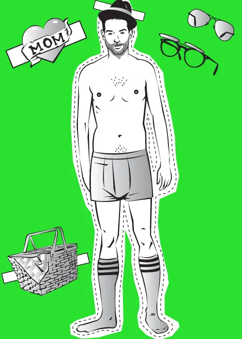

Degrees of Freedom
Empower learners with Quarto, WebR, and Pyodide
Ted Laderas, PhD
First Things First
- Do you want to increase active learning in your data science courses?
- Less blank stares?
- More discussion?
- More interaction?
Introducing WebR/Pyodide
WebR/Pyodide can Help
- Lower cognitive load
- Encourage active learning
- Increase social learning
Lower Cognitive Load
Thoughts in a Learner’s Brain
- What is R actually?
- Variable? What’s that?
- Need to finish that report…
- Got to pick up my daughter in an hour
- Am I doing this right?
- RStudio? OMG, I don’t get it
What can we help with?
- What is R actually?
- Variable? What’s that?
- Need to finish that report…
- Got to pick up my daughter in an hour
Am I doing this right?RStudio? OMG, I don’t get it
Fear is Part of Cognitive Load
Am I Doing this Right?
- Fear of doing something wrong
- Everything we can do to alleviate fear, the less cognitive load learners will have.
RStudio / Positron Overwhelm

Lower Friction for New Learners
- Imagine you are brand new to working with programming
- Imagine this is your first interaction with R or Python
Exercise (Python)
Run the code chunk below by clicking “Run code”.
Before you run it, what do you expect to see?
What’s Next?
Increase Active Learning
What is Active Learning?
- Learning by doing
- Activities that support and cement knowledge by application
Supporting Active Learning
- Feedback
- Metalearning
Providing Encouragement using {gradethis}
- Giving feedback is important
- Focus attention to reduce fear
Exercise
- Filter
biopicsso that it only showsCriminalmovies (you’ll have to use thetype_of_subjectvariable inbiopics. - Show how many rows are left using
nrow(crimeMovies).
Model Meta-learning
- Learning how to learn
- Help learners explore documentation
Exercise (R)
Look at the documentation for arrange(). Take a look at the examples.
How do we change the below code to sort by descending order?
Use the desc() function.
Increase Social Learning
What is Social Learning?
- We learn better when we learn together
- Discussion with your neighbor
Better Plots
- Workshop about design principles for plots in R and Python
- Take a Paper Doll approach to improving plots
- Design in in the eye of the beholder
- Discuss what works for you
- Sharing styling code with each other

Better Plots
Experiment with adding or removing to the graph, adding your own annotations.
If there’s a show that you want to highlight, try adding an annotation to highlight it. Or try adding an annotation at Roseanne’s lowest rating!
Data Snacks

Note: Summative Assessment
- Using WebR/Pyodide for summative assessment is difficult
- Technically difficult
- client side / source code is available in console
- Come talk to George if you want to do this
- Technically difficult
Getting Setup with WebR/Pyodide
Getting Setup
- Start a quarto project
- Install the quarto live plugin
Front matter
format: live-revealjsorformat: live-htmlresources:- specify a folder or file in your repository to include
Front matter (WebR)
---
engine: knitr
format: live-revealjs
resources:
- data
webr:
render-df: paged-table
packages:
- gradethis
- dplyr
- ggplot2
- palmerpenguins
---render-df- how to render tablespackages- put packages here
Front matter (Pyodide)
packages: packages
Transform your code chunks
{r}–>{webr}{python}–>{pyodide}
Transform those chunks
WebR/Pyodide
Now Executable!
Conclusion
WebR/Pyodide is a powerful technology that can help you to:
- Reduce Cognitive Load
- Increase Active Learning
- Increase Social Learning
Resources / Thanks!
George Stagg for all his work on WebR/Quarto Live and for the chat
Miscellaneous
- Observable integration (have to know JS)
- Hook up WebR / Pyodide to Observable - Modern version of
crosstalk- sliders and boxes - Reactive experience

Social Learning